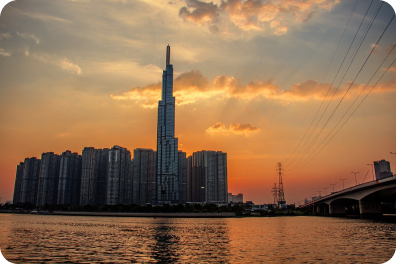

Pictures/Videos
Check in
Tag
-
Ho Chi Minh City, with its strong development in recent years, is a vibrant and dynamic city. I really enjoy the lively atmosphere and diverse culture of this city. From the wide avenues to the narrow alleys, from the bustling market streets to the modern commercial centers, they all create a colorful picture of the city. In addition, I am also impressed by the enthusiasm and willpower of the people here to develop and improve their city. Ho Chi Minh City is truly a great destination for those who want to explore and experience Vietnamese culture.
- 


@TrnghuyBru and 504 other treker liked -
@trnghuybru
2 hours agoHo Chi Minh City, with its strong development in recent years, is a vibrant and dynamic city. I really enjoy the lively atmosphere and diverse culture of this city. From the wide avenues to the narrow alleys, from the bustling market streets to the modern commercial centers, they all create a colorful picture of the city. In addition, I am also impressed by the enthusiasm and willpower of the people here to develop and improve their city. Ho Chi Minh City is truly a great destination for those who want to explore and experience Vietnamese culture.
@TrnghuyBru and 504 other treker liked
Xuan Phong
Lovely. Thank you for visiting Ho Chi Minh City. Hope next time I will visit your place2 minutes age Reply

Xuan Phong
Lovely. Thank you for visiting Ho Chi Minh City. Hope next time I will visit your place2 minutes age Reply
Xuan Phong
Lovely. Thank you for visiting Ho Chi Minh City. Hope next time I will visit your placeXuan Phong
Lovely. Thank you for visiting Ho Chi Minh City. Hope next time I will visit your place